Les flux migratoires et migration mondiale au 21e siècle
Introduction
Migration?


Qu’est‑ce que la migration ?
Migrants
Personnes qui se déplacent d’un pays à un autre, quel que soit le motif (travail, études, regroupement familial, etc.).
Pas forcément en situation irrégulière
Qu’est‑ce que la migration ?
Migrants
Personnes qui se déplacent d’un pays à un autre, quel que soit le motif (travail, études, regroupement familial, etc.).
- Traverser une frontière
Pas forcément en situation irrégulière
Qu’est‑ce que la migration ?
Migrants
Personnes qui se déplacent d’un pays à un autre, quel que soit le motif (travail, études, regroupement familial, etc.).
- Traverser une frontière
Pas forcément en situation irrégulière
- Visa ou permis de séjour
Qu’est‑ce que la migration ?
Réfugiés
Personnes persécutées dans leur pays d’origine et qui fuient pour protéger leur vie ou liberté (Convention de Genève, 1951).
Reconnaissance officielle par un État ou par le Haut Commissariat des Nations Unies pour les réfugiés (UNHCR).
Qu’est‑ce que la migration ?
Réfugiés
Personnes persécutées dans leur pays d’origine et qui fuient pour protéger leur vie ou liberté (Convention de Genève, 1951).
- Raisons: appartenance à un groupe éthique, politique, religieux ou orientation sexuelle
Reconnaissance officielle par un État ou par le Haut Commissariat des Nations Unies pour les réfugiés (UNHCR).
Qu’est‑ce que la migration ?
- Demandeurs d’asile
- Individus qui sollicitent la protection internationale mais dont le statut n’est pas encore reconnu.
- Soumis à une procédure d’examen (ex. accord Dublin).
- Individus qui sollicitent la protection internationale mais dont le statut n’est pas encore reconnu.
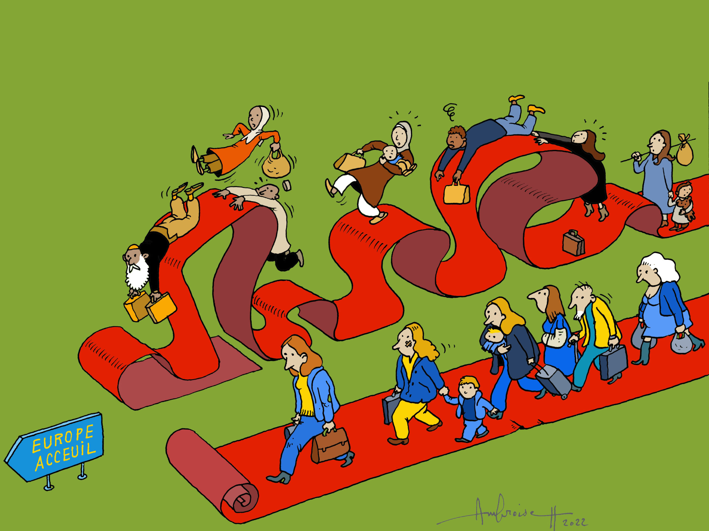
La migration, un enjeu politique majeur
- Politique
- Touche de nombreux domaines de nos sociétés
- Des mouvements politiques se forment sur ce sujet
La migration, un enjeu politique majeur
- Politique
- Touche de nombreux domaines de nos sociétés
- Des mouvements politiques se forment sur ce sujet
- Médiatisation
- Les médias amplifient les récits dominants
- Les médias se concentrent sur le sensationnel
Plan de la séance
- Enjeux des migrations internationales
- Passports, frontières et souveraineté
- Migration internationale au XXIe siècle
- Migrations invisibles
- Futur de la migration
Enjeux des migrations internationales
Tensions dans la migration
De quelle migration parle-t-on?
Souveraineté vs droit international
Devoir vs Identité
Migration dans les médias
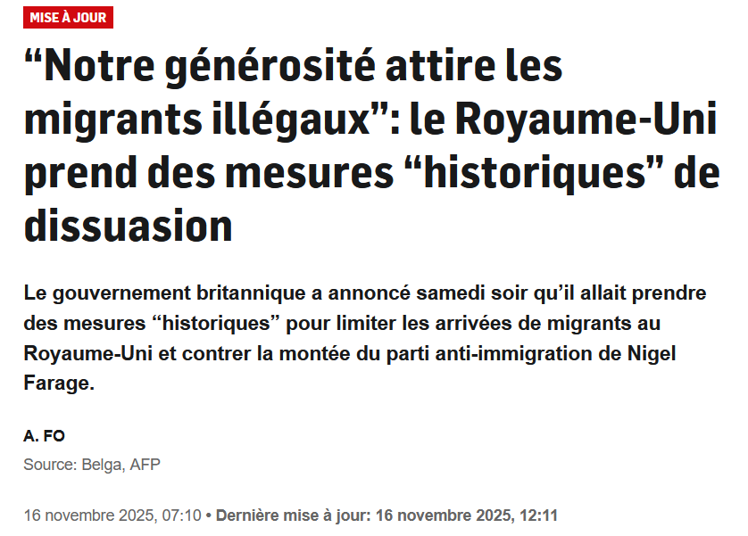https://www.7sur7.be/monde/notre-generosite-attire-les-migrants-illegaux-le-royaume-uni-prend-des-mesures-historiques-de-dissuasion~a11cf528/
Migration dans les médias: Terminologie amalgamée
“Migrant” est souvent employé comme un adjectif générique, alors que le droit international distingue
“Illégal”
Migration dans les médias: Terminologie amalgamée
- “Migrant” est souvent employé comme un adjectif générique, alors que le droit international distingue :
- Réfugié (protégé par la Convention de Genève)
- Demandeur d’asile (en attente de décision)
- Migrants économiques (déplacements volontaires)
- Réfugié (protégé par la Convention de Genève)
- “Illégal”
Migration dans les médias: Terminologie amalgamée
- “Illégal”
Migration dans les médias: Terminologie amalgamée
“Illégal”
- Perçu comme faute morale et légale
- Masquant la légitimité juridique
Migration dans les médias: Terminologie amalgamée
“Illégal”
- Perçu comme faute morale et légale
- Masquant la légitimité juridique
- Préférer: Migration irrégulière
Migration dans les médias: Terminologie amalgamée
“Illégal”
- Perçu comme faute morale et légale
- Masquant la légitimité juridique
- Préférer: Migration irrégulière
Création du termes contradictoires comme “réfugiés illégaux”
Examples d’articles
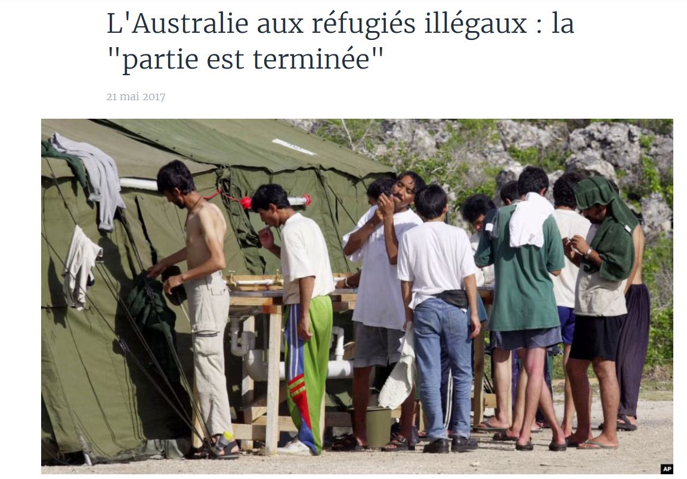
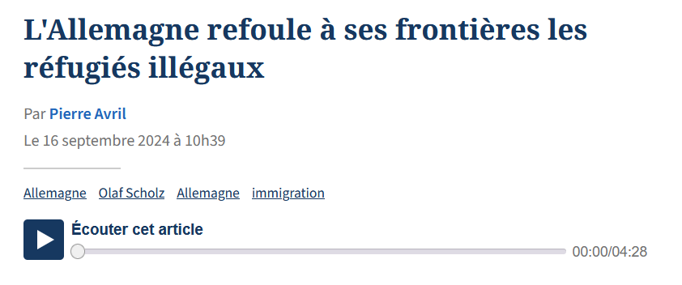
Enjeu: migration désirable vs migration indésirable
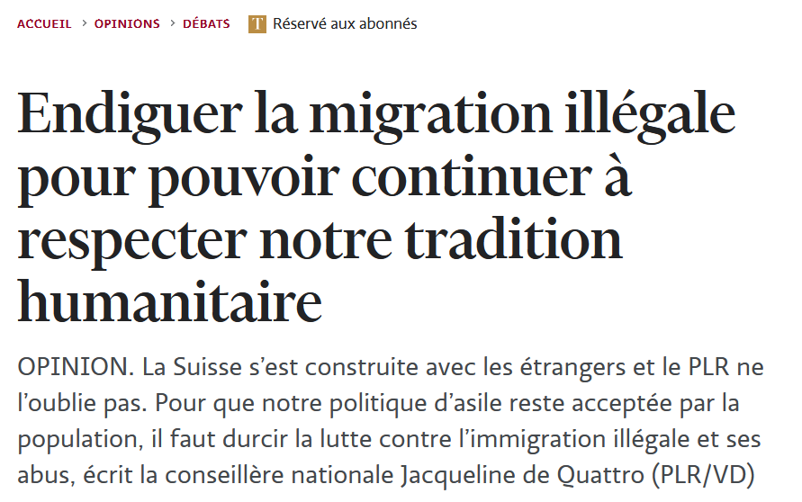Migration dans les médias: Cadre médiatique : quels récits ?
Étude comparative “Migration coverage in Europe’s media” (2020). 2015-2018
- Couverture médiatique majoritairement négative
- Migrants vu comme une masse/vague plutôt que comme des individus
- Impact négativement le point de vu sur la migration
Migration dans les médias: Cadre médiatique : quels récits ?
Étude comparative “Migration coverage in Europe’s media” (2020). 2015-2018
| Axe d’analyse | Observation principale (documents) |
|---|---|
| Quantité | Le pic de couverture (2015‑2016) représente 40 % de tous les articles étudiés (EJO 2015). |
| Thématique | 45 % des articles portent sur le débat politique, 17 % sur la situation concrète des migrants. |
| Ton | Les médias de droite affichent plus souvent des cadres négatifs; les médias de gauche privilégient les cadres d’aide. |
| Acteurs | 51 % des articles citent des politiciens, seulement 29 % mentionnent les réfugiés eux‑mêmes. |
Tension 1: de quelle migration parle-t-on?
Tension 1: de quelle migration parle-t-on?
Migration régulière
Migration irrégulière
Tension 1: de quelle migration parle-t-on?
Migration régulière
- Migration économique / Touristique
- Document (Passport)
- Pays développé
- Mobilité simple (Expat)
Migration irrégulière
- Migration d’asile
- Difficulté d’obtention de documents
- Pays moins développé
- Migration dangereuse et difficile
Tension 1: de quelle migration parle-t-on?
Migration régulière
- Mobilité simple (Expat)
- Courte durée
- Multiple
Migration irrégulière
- Migration dangereuse et difficile
- Longue
- Unique et définitive
Tension 2: souveraineté vs droit international
Souveraineté
Autorité suprême et indépendante d’exercer le pouvoir politique, juridique et économique sur son territoire et sa population, sans subir d’ingérence extérieure.
Droit international
- Convention de Genève
- Espace Schengen
- Accord Dublin
Tension 2: souveraineté vs droit international
Souveraineté
Autorité suprême et indépendante d’exercer le pouvoir politique, juridique et économique sur son territoire et sa population, sans subir d’ingérence extérieure.
Droit international
- Convention de Genève
- Espace Schengen
- Accord Dublin
Résultat: demande d’asile sur le territoire, mais en même temps renforcement des frontières
Convention de Genève
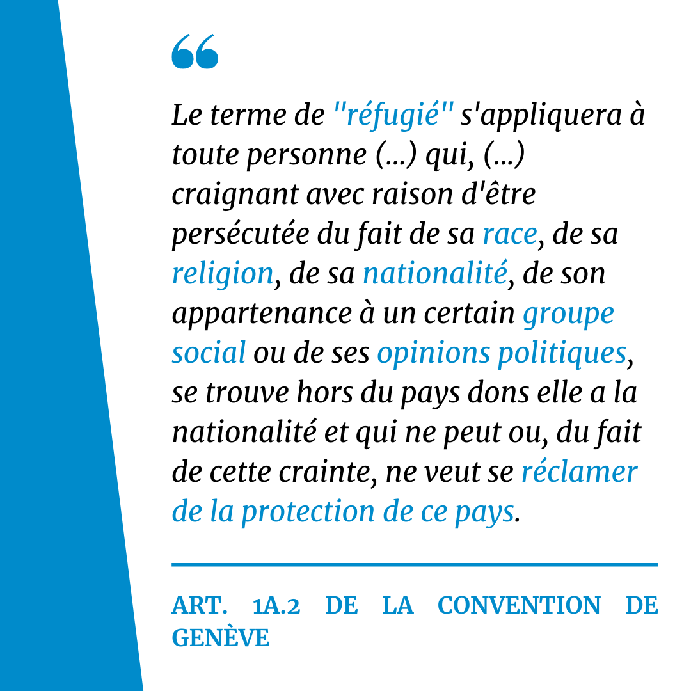Espace Schengen (1995)
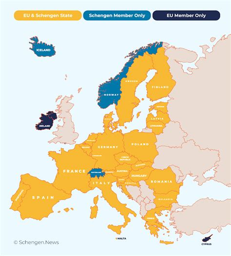
Libre circulation des personnes
Réduction des contrôles aux frontières internes
Augmentation des contrôles aux frontières externes
Accord Dublin (2014)
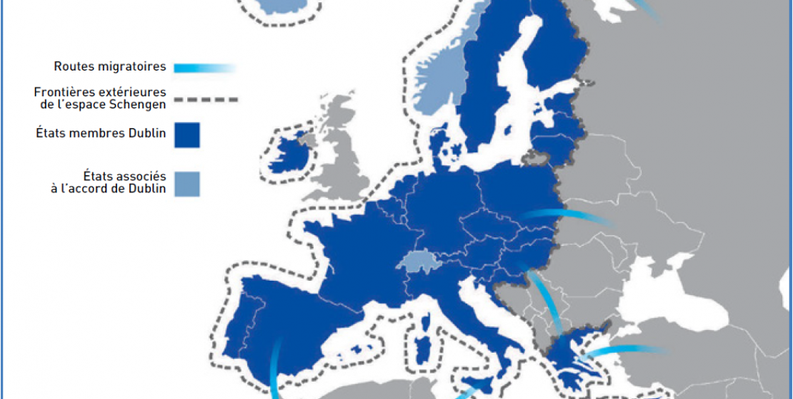
- Règlement européen définissant les règles de compétence et de procédure en matière d’asile au sein de l’UE
- La demande d’asile doit être traitée par le premier État membre où le demandeur est arrivé
- Unique traitement
Accord Dublin (2014)
Concrètement
- Prise d’empreinte dans le premier pays où la demande est faite
- Empreint stoquées dans une base de donnée (Eurodac)
- Lors d’une nouvelle demande ailleurs on vérifie la base de données
Accord Dublin (2014)
Concrètement
- Si les empreintes sont dedans Eurodac, les personnes sont renvoyées dans le premier pays sans traitement du dossier
Accord Dublin (2014)
Problème: mets la pression sur les pays au frontières (Grèce, Italie, Espagne, Malte, Chypre, Hongrie)
Concrètement
- Si les empreintes sont dedans Eurodac, les personnes sont renvoyées dans le premier pays sans traitement du dossier
Accord Dublin (2014)
Problème: mets la pression sur les pays au frontières (Grèce, Italie, Espagne, Malte, Chypre, Hongrie)
Conséquences:

Accord Dublin (2014)
Problème: mets la pression sur les pays au frontières (Grèce, Italie, Espagne, Malte, Chypre, Hongrie)
Conséquences:
- Ou laisser passer les personnes
Tension 3: devoir vs indentité
Devoir humanitaire
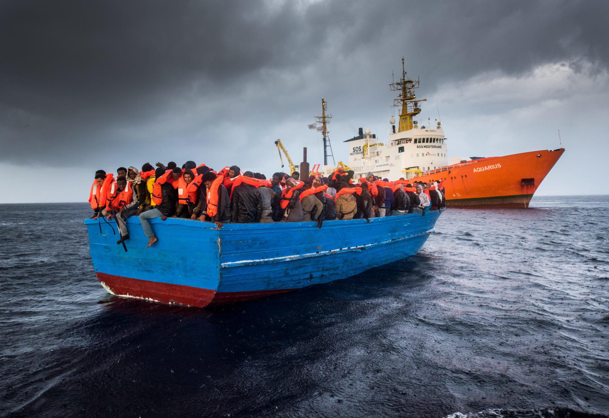
Identité
Migration vu comme risque:
- Identité culturelle (langue, culture)
- Sécurité (attentats, criminalité)
- Économique (concurrence, coût)
Passports, frontières et souveraineté
Les frontières sont-elles naturelles?
Idée reçue : les frontières seraient des limites immuables, héritées de la nature.
Les frontières sont-elles naturelles?
Idée reçue : les frontières seraient des limites immuables, héritées de la nature.
En réalité : les frontières sont avant tout des constructions sociales et politiques.
Du mouvement humain à la sédentarisation
- Préhistoire : Homo sapiens parcourt le globe – aucune notion de frontière.
- Révolution néolithique : agriculture → besoin de protéger les champs → premières démarcations matérielles (piquets, fossés).
- Civilisations antiques : limites fonctionnelles (ex. Limes romain) mais pas de souveraineté territoriale au sens moderne.
Du mouvement humain à la sédentarisation
La sédentarisation crée la condition d’une future régulation des déplacements.
Naissance du contrôle des mobilités
- Lettre de sûreté (Moyen‑Âge) : autorisation locale de passage entre seigneuries.
- Période moderne (XVIIᵉ – XIXᵉ s.) :
- Napoléon I (1806) impose le passe‑port obligatoire, registre municipal, description physique.
- Le document devient le premier lien officiel entre individu et État.
- Napoléon I (1806) impose le passe‑port obligatoire, registre municipal, description physique.
Le passeport apparaît comme outil de pouvoir : il identifie, surveille et, surtout, exclut.
Sources : Wimmer & Glick Schiller 2002 – montre l’évolution des dispositifs d’identification dans le cadre de la construction de l’État‑nation; Atak 2021 (p. 4‑5) décrit les exigences actuelles de l’espace Schengen.
L’État‑nation et la fixation des frontières
- Traité de Westphalie (1648) : souveraineté territoriale reconnue, frontières “délimitées” entre États.
- XIXᵉ siècle : colonisation → tracé de frontières arbitraires, souvent sans tenir compte des réalités ethniques ou géographiques.
- Après‑WWI : création de la Société des Nations → premiers passeports “internationaux” pour les réfugiés.
De Westphalie à Schengen : la transformation des frontières
| Étape | Date | Principaux changements |
|---|---|---|
| Traité de Westphalie | 1648 | Instaure la souveraineté territoriale des États‑nations ; les frontières deviennent “délimitées”. |
| 19ᵉ siècle | 1800‑1900 | Multiplication des passeports, contrôle douanier et douanes nationales. |
| Création de l’Union européenne | 1957 (Traité de Rome) | Premiers accords de libre circulation des personnes entre certains États. |
| Espace Schengen | 1995 (accord) | Suppression des contrôles aux frontières intérieures, harmonisation des visas et du contrôle aux frontières extérieures. |
Référence : Atak 2021, § II “Réglementations spécifiques à l’espace Schengen” ; Wimmer & Glick Schiller (2002) sur la “containerisation” des sociétés nationales.
Mécanismes de migration régulière
- Visas de travail – accords bilatéraux (ex. UE‑Canada, UE‑Japon) définissant quotas, durée et conditions d’emploi.
- Programmes d’échange – Erasmus+, programmes de mobilité académique et professionnelle.
Note : La plupart de ces mécanismes reposent sur le passeport comme preuve d’identité et de nationalité.
Passport? Visa?
Visa: autorisation officielle délivrée par le gouvernement d’un pays qui permet à un étranger d’entrer, de séjourner ou de travailler sur son territoire pendant une période déterminée.
Passeport: document d’identité officiel délivré par l’État de nationalité d’une personne.

Le visa : norme du contrôle contemporain
Base: une durée et un motif précis
Le visa institutionnalise la hiérarchie des mobilités : il sépare les voyages “choisis” (tourisme, affaires) des voyages “régulés” (travail, études, asile).
Hiérarchie des mobilités : choisis vs. forcés
| Type de mobilité | Conditions d’accès | Coût & délai | Risque d’incertitude |
|---|---|---|---|
| Voyage touristique (passe‑port “fort”) | Aucun visa ou visa à l’arrivée | Faible (billet d’avion) | Très faible |
| Travail/études (visa) | Demande préalable, justificatif d’emploi/inscription | Modéré à élevé (frais de dossier, sponsor) | Moyen |
| Asile / protection | Procédure d’asile, critères de persécution | Variable, souvent coûteux (avocats, déplacements) | Élevé |
| Migrants économiques de pays pauvres | Visa requis, quotas, exigences financières | Très élevé (frais de visa 30‑150.-, transport) | Très élevé |
Triple punition pour les ressortissants de pays à faible pouvoir de passeport : pauvreté → frais de visa → liberté restreinte.
Géographie du pouvoir de passeport
- Passeports “puissants” : UE, États‑Unis, Canada, Australie, Japon – accès sans visa à 160 + pays.
- Passeports “faibles” : Afghanistan, Soudan du Sud, Yémen – accès sans visa à < 40 pays, exigences de visa coûteuses.
La valeur du passeport correspond à la richesse économique du pays d’origine et à la perception de risque par les États d’accueil.
Le visa comme instrument économique
- Pays ouvrent leurs frontières aux citoyens de pays riches : tourisme, investissements, échanges commerciaux.
- Pays pauvres sont soumis à des exigences strictes : quotas, contrôles de solvabilité, durée de séjour limitée.
Le visa comme instrument économique
- Pays ouvrent leurs frontières aux citoyens de pays riches : tourisme, investissements, échanges commerciaux.
- Pays pauvres sont soumis à des exigences strictes : quotas, contrôles de solvabilité, durée de séjour limitée.
Donc pour des raisons économiques
Le visa comme instrument économique
Le cas de l’Espagne
Régime de résidence raccourci: Les citoyens des pays ibéro‑américains (Argentine, Brésil, Colombie, Mexique, etc.) peuvent demander la nationalité espagnole après seulement deux années de résidence légale, contre dix ans pour la plupart des autres nationalités.
- Pas de test linguistique
Le visa comme instrument économique
Achat de citoyenneté
- Exemple d’investissement‑citoyenneté : Malte (programme “Individual Investor Programme”) – passeport acheté contre investissement + contributions.
Cela révèle une démocratie à deux vitesses : les droits de mobilité sont monétisés pour les plus aisés, tandis que les plus vulnérables affrontent des barrières administratives lourdes.
Mobilités inégales : conséquences sociales
- Frein à la mobilité professionnelle : talents des pays à faible pouvoir de passeport rencontrent des obstacles de visa, limitant l’innovation et la redistribution des compétences.
- Impact sur les droits humains : accès limité aux soins, à l’éducation, à la protection juridique.
- Effet de “brain‑drain” : les élites migrent, laissant derrière elles des économies fragilisées.
Mobilités inégales : conséquences sociales
La hiérarchie des mobilités contribue à reproduire les inégalités mondiales.
Contrôle frontalier contemporain
Plus de murs
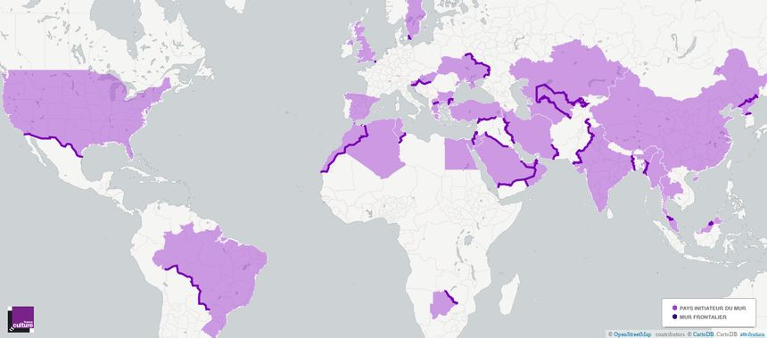Frontex
- Frontières extérieures surveillées : 2 500 km de postes frontaliers, 12 000 agents Frontex. (rapport annuel 2022)
- Missions Frontex : 1 200 opérations, plus de 250 000 interceptions de migrants irréguliers (rapport annuel 2022)
Budget Frontex
Malgré des cas de refoulement illégaux, de maltraitance, de manque de transparence et abus de pouvoir, le budget augmente
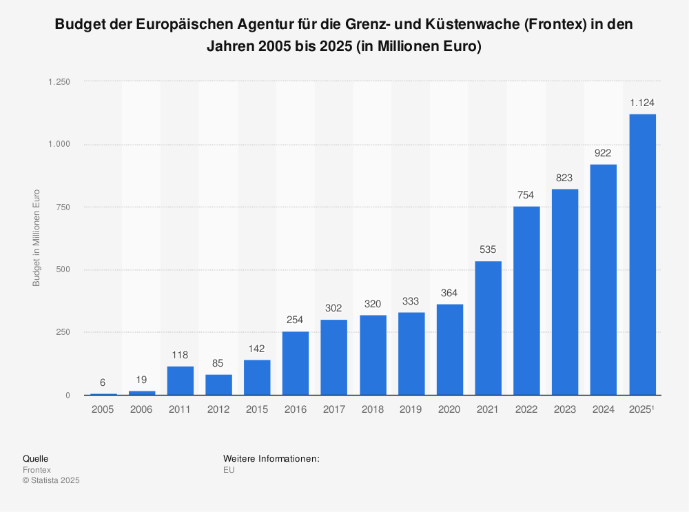Migration internationale au XXIe siècle
Historique de la mondialisation et ses vagues migratoires
| Phase | Caractéristique | Exemple de flux |
|---|---|---|
| Industrialisation (1850‑1914) | Recherche de main‑d’œuvre industrielle | Europe → Amériques (≈ 15 M) |
| Décolonisation (1945‑1975) | Retour des colonisés, migrations de main‑d’œuvre vers métropoles | Maghreb → France, Inde → Royaume‑Uni |
| Globalisation néolibérale (1980‑2000) | Accords de libre‑échange, mobilité qualifiée | Chine → USA (tech) |
| Hyper‑connectivité (2000‑présent) | Internet, réseaux sociaux, mobilité rapide | Réseaux de passeurs numériques, migration climatique |
Migration internationale globale

2024: 304 Mio (3.7%)
Proportion de migrants internationaux

Part de l’asile dans la migration internationale

Cas européen
~7% Étrangers
dont 4.5% Non-Européens
0.6% demandeurs d’asiles
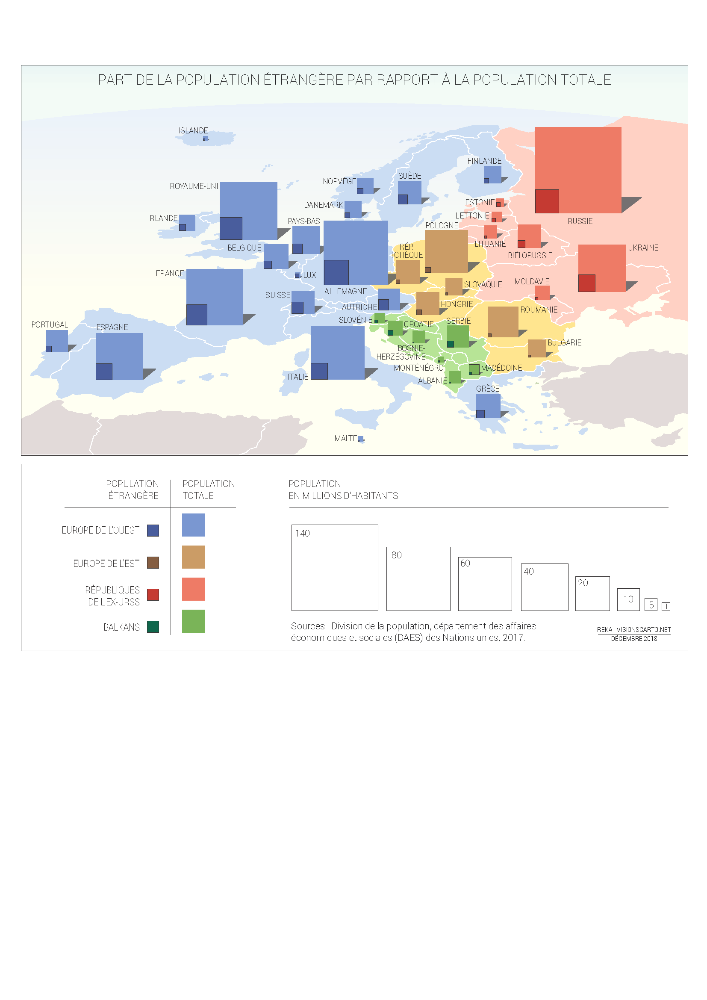
Nationalités non-EU
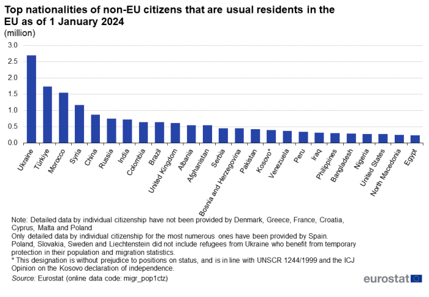Suisse:
Pays avec la plus grande proportion de migrants

Nombre de migrants internationnaux par région d’origine

Corridors majeurs aujourd’hui (cartes interactives)
| Corridor | Origine | Destination | Volume 2022‑23 | Image illustrative |
|---|---|---|---|---|
| Afrique → Europe (Méditerranée) | Libye, Tunisie, Maroc | Italie, Grèce, Espagne | ≈ 2,1 M (arrivées totales)⁴ |  |
| Amérique latine → USA | Mexique, Guatemala, Honduras | États‑Unis (Californie, Texas) | ≈ 1,8 M (arrivées régulières + irrégulières)⁵ |  |
| Asie → Moyen‑Orient | Afghanistan, Pakistan, Iran | Turquie, Arabie Saoudite | ≈ 2,3 M (travailleurs temporaires)⁶ |  |
Sources : IOM DTM 2024 (corridors), UN DESA 2023 (stocks), Eurostat 2023 (flux intra‑UE).
Migration historique en carte

Migration entre Nord et Sud
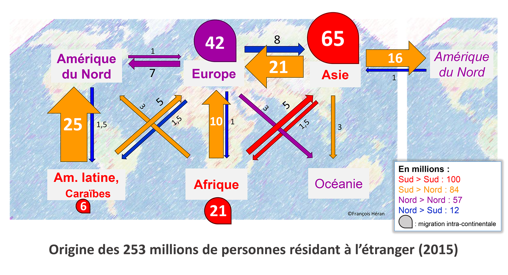Évolution de la migration d’asile

Pays de provenances des principales routes migratoires

Points d’arriver en Europe par route migratoire

Nombre de demandeurs d’asile
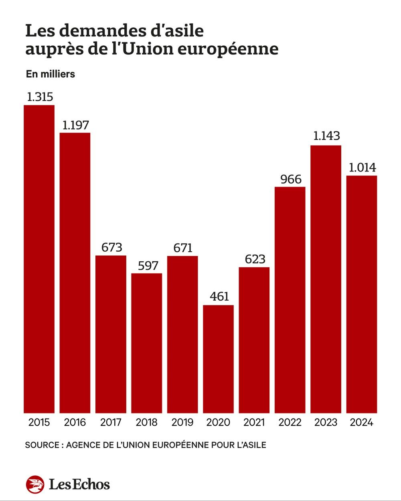Nombre de demandeurs d’asile
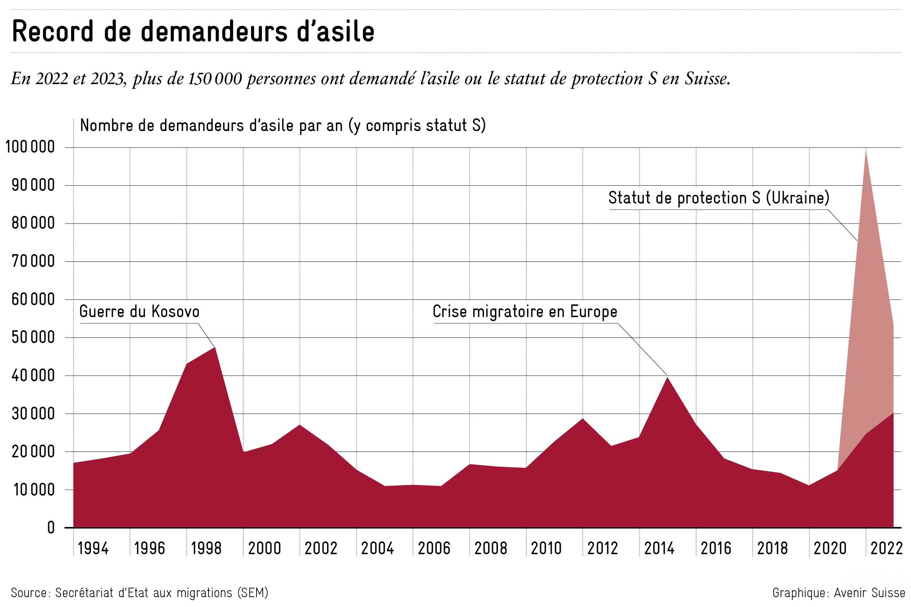Évolution des arrivées et du nombre de décès
Risques
- Exploitation
- Violence/Torture
- Viole
Risques sanitaires et sécuritaires en route
- Routes terrestres (ex. Balkans, traversées du désert)
- Exposition à la violence des groupes criminels, enlèvements, extorsion
- Risques de traumatismes psychologiques
- Exposition à la violence des groupes criminels, enlèvements, extorsion
- Traversées en mer
- Moyenne ≈ 3 % de décès parmi les migrants en Méditerranée (UN Migration Report 2022).
- Conditions de surcharge des bateaux de fortunes → hypothermie, déshydratation, maladies infectieuses.
- Moyenne ≈ 3 % de décès parmi les migrants en Méditerranée (UN Migration Report 2022).
Refoulement (push‑back)
- Refoulement : renvoi d’une personne vers un pays où elle risque d’être persécutée ou exposée à des risques graves, sans examen individuel de sa demande d’asile (art. 33 de la Convention de Genève).
- Pratique interdite par le droit international humanitaire et les conventions européennes (Charte des droits fondamentaux de l’UE, Directive 2013/32).
Refoulement (push‑back)
Chiffres clés
Plus de 1 000 incidents de push‑back signalés par la garde côtière turque depuis 2020.
Au moins 14 décès confirmés liés à ces pratiques (avril 2022).
Loterie de l’asile
Malgré un réglement Dublin commun, une divergence de pratiques
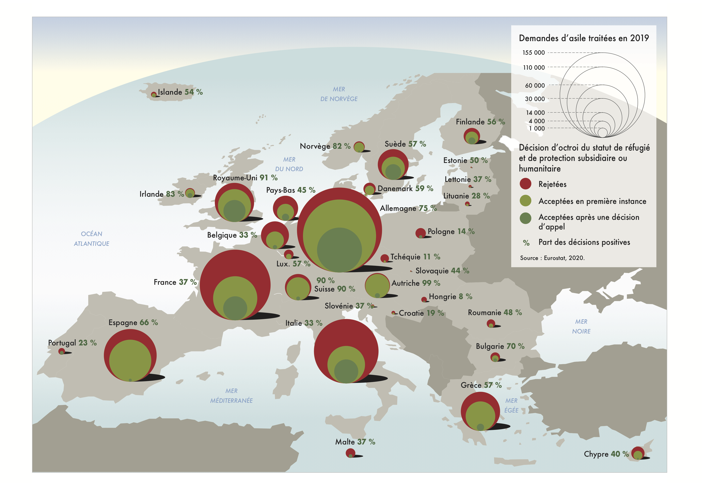Le cas de l’Ukraine
24 février 2022: Attaque Russe entraînant un grand mouvement de population
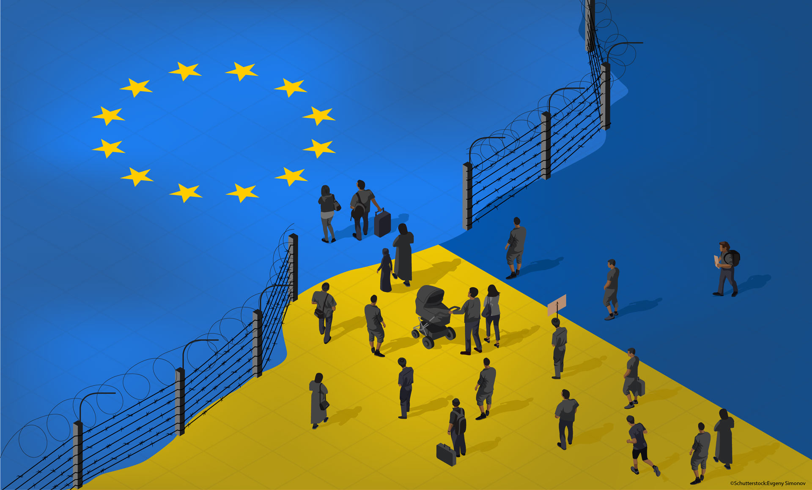Migration ukrainienne contexte
- Depuis février 2022, plus de 8 millions de personnes ont fui l’Ukraine (UNHCR).
- L’Union européenne a activé le statut de protection temporaire pour les Ukrainiens, garantissant :
- Droit de séjour de jusqu’à 3 ans sans procédure d’asile individuelle.
- Accès immédiat au marché du travail, à la santé et à l’éducation.
Données contrastées
| Groupe de réfugiés | Nombre estimé (2023) | Taux d’acceptation dans l’UE* |
|---|---|---|
| Ukrainiens | 8 M+ | > 90 % (mise à disposition de places d’hébergement, allocation de protection temporaire) |
| Syriens | 5,6 M | ≈ 30 % (nombre de demandes d’asile acceptées) |
| Afghans | 2,5 M | ≈ 20 % (procédures d’asile en cours, nombreux retours forcés) |
*Sources : Eurostat, Office européen de lutte antidiscrimination (ELAD), UNHCR. Les taux d’acceptation reflètent les décisions finales d’asile ou de protection temporaire accordées par les États membres.
Pourquoi ce paradoxe ?
La proximité géographique et culturelle a renforcé le sentiment d’urgence
La directive européenne sur la protection temporaire (2001) a été appliquée rapidement, alors que les procédures d’asile classiques restent lentes et fragmentées.
Pourquoi ce paradoxe ?
Narratif différencié
- réfugiés ukrainiens: victimes d’une agression extérieure
- réfugiés d’autres régions: migration économique / instabilité interne
Pourquoi ce paradoxe ?
Narratif différencié
- réfugiés ukrainiens: victimes d’une agression extérieure
- réfugiés d’autres régions: migration économique / instabilité interne
Migration féminine et “européen” vs imaginaire masculin et non-européen
Message
Les moyens sont disponibles, l’accueil est un choix
Migrations invisibles & marginalisées
Contexte
La concentration sur un type de migration met de côté d’autres formes de mobilité:
- De qui ne parle-t-on pas?
- De quoi ne parle-t-on pas?
Biais dans la migration
- Intéret que pour les migration Sud-Nord
- Majorité des centre de recherche en migration dans les pays du Nord
Des déplacements effacés
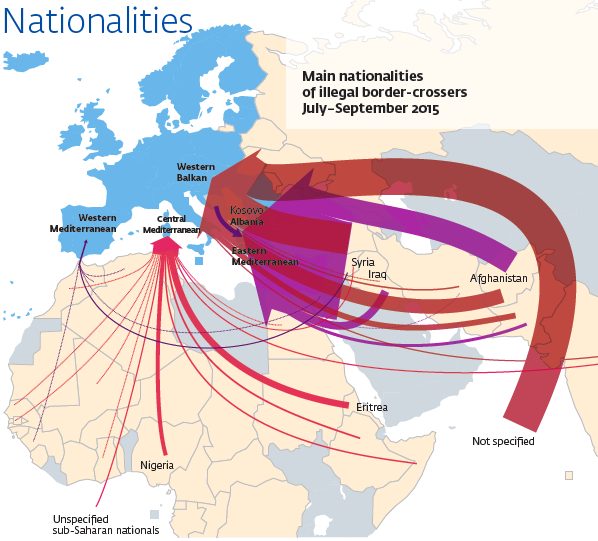
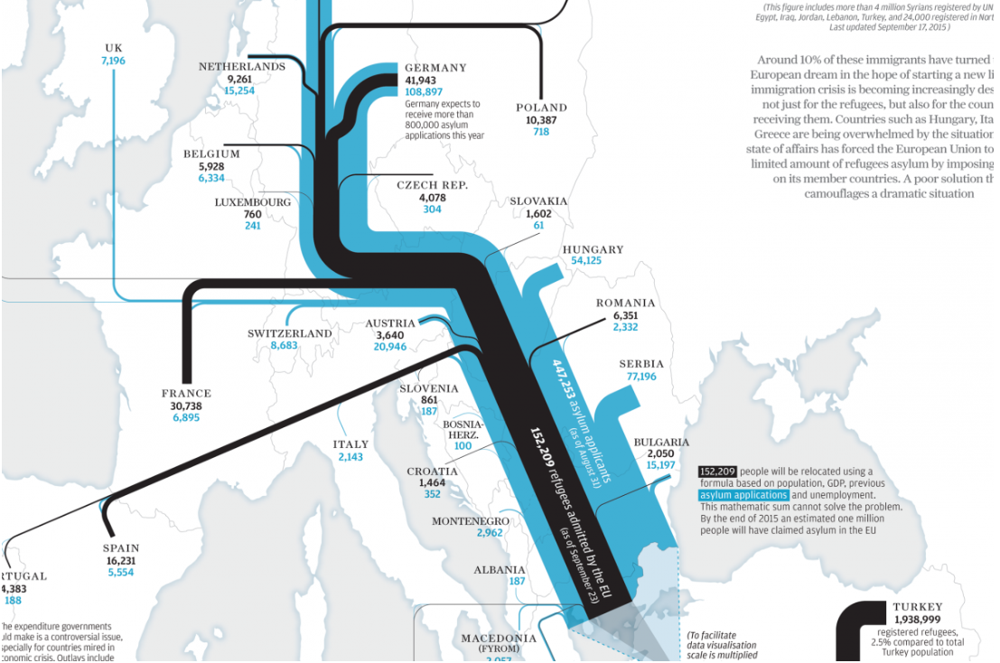
Migration majoritairement limitrophe
Sans parler des déplacés internes
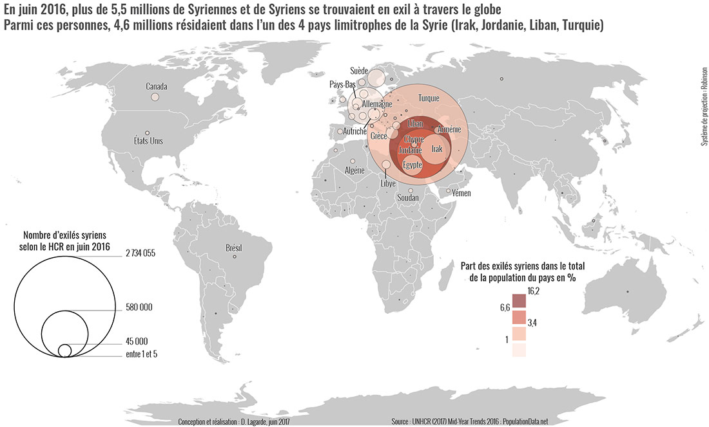Mineurs non-accompagnés
Mineurs non-accompagnés
Définition: personne de moins de 18 ans qui se trouve sur le territoire d’un pays d’accueil
Le Mineur Non-accompagné est considéré comme vulnérable et bénéficie d’une protection spéciale en vertu du droit international (Convention relative aux droits de l’enfant, Convention de Genève sur les réfugiés, etc.)
Mineurs non-accompagnés
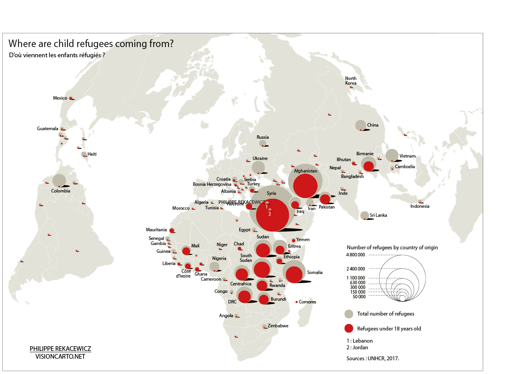Mineurs non-accompagnés
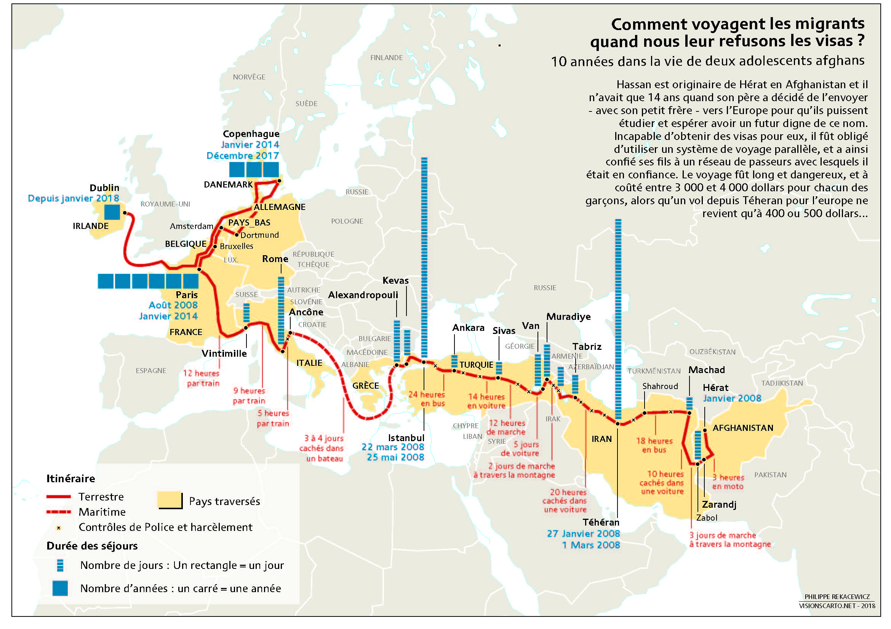Femmes migrantes

Risques spéficiques
- Violence de genre (viole et agression)
- Exploitation
- Enlèvement
Sans‑papier
| Profil | Pays d’origine | Stratégie de survie | Impact des politiques |
|---|---|---|---|
| Travailleurs agricoles | Honduras, Guatemala | Emploi saisonnier informel | Risque de détention, peu d’accès aux soins |
| Étudiants en situation irrégulière | Syrie, Afghanistan | Travail au noir, réseaux communautaires | Exclusion du système de protection sociale |
| Familles recomposées | Nigéria, Ghana | Logement partagé, micro‑entreprises | Vulnerabilité accrue aux expulsions |
Étude de cas : Programme de régularisation de l’Italie (2022) a permis à ≈ 12 000 sans‑papier d’obtenir un permis de séjour, réduisant de 45 % les expulsions locales
Migration climatique – routes émergentes (2030‑2050)
Causes
- sécheresse / désertification
- cyclones
- inondations, sécheresses, incendies de forêt
Conséquence
- Court terme: déplacement interne
- Long terme: déplacement international
Mobilité “expat” vs migration : dépolitisée
- Expatriés hautement qualifiés (Tech, Finance) : 5,4 M personnes (2022) ; souvent exclues des débats publics
- Pourquoi ? : visas “premium, couverture médiatique limitée, perception d’”investissement” plutôt que de “déplacement”.
De quoi parle-t-on rarement?
Contribution économique (fiscalité)
Conditions dans le pays d’origine avant/pendant/après le départ
Dignité: droit vs besoin “qu’est-ce que ça rapporte?”
Futur de la migration
Tendances politique, démographiques & économiques
- Vieillissement : Europe ‑ population > 65 ans = 23 % (2030) → besoin accru de main‑d’œuvre qualifiée
- Brain‑drain/gain : 12 % des diplômés africains émigrent (2022) ; potentiel de remittances ≈ US $ 850 M annuels (World Bank 2023)
- Populisme : hausse de partis anti‑immigration (+ 8 % des votes en UE, 2022)
Points clés
La migration est un phénomène complexe (migration, asile, politique, etc.)
La mobilité n’est pas distribuée également
Les conséquences des migration sont multiples